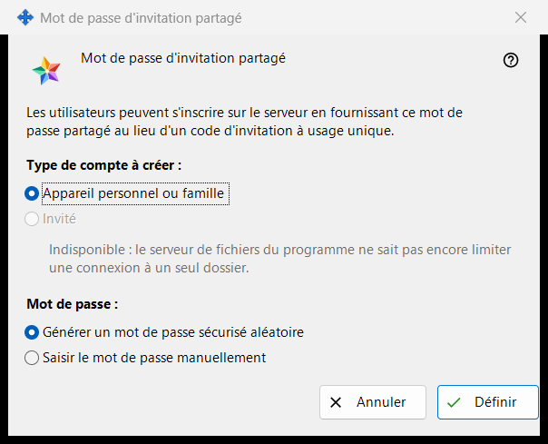
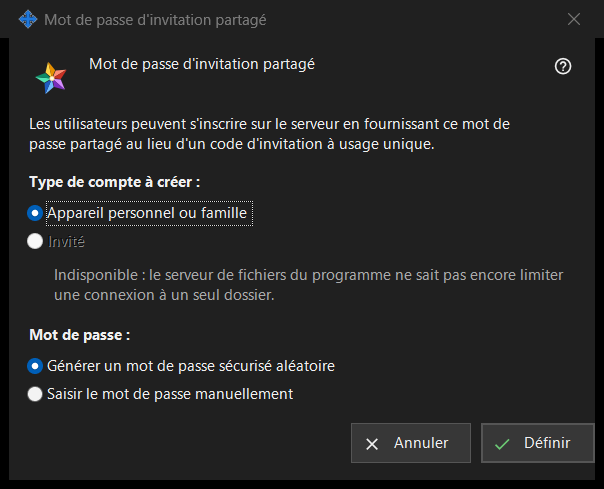

Mot de passe d'invitation partagé
Objectif
Cette fenêtre permet aux utilisateurs de s'inscrire sur le serveur avec un mot de passe partagé au lieu d'un code d'invitation à usage unique. Elle s'ouvre quand vous cochez «Mot de passe d'invitation partagé» dans le groupe «Invitations» des paramètres du serveur d'échange, ou avec «Définir le mot de passe partagé..» à côté.


Dans cet ordre
- Choisissez le type de compte.
- Choisissez si le programme génère le mot de passe ou si vous le saisissez vous-même.
- Cliquez sur «Définir».
- Si le mot de passe a été généré, copiez-le depuis la fenêtre qui l'affiche une seule fois.
- Pour cesser de l'accepter, décochez «Mot de passe d'invitation partagé» et confirmez.
Les éléments
Type de compte
«Type de compte à créer :» propose «Appareil personnel ou famille» et «Invité». «Invité» est désactivé et la ligne en dessous en donne la raison : le serveur de fichiers du programme ne peut pas limiter un identifiant à un seul dossier. Quand un mot de passe partagé est déjà activé, son type actuel est présélectionné. Si ce type existant est Invité, «Définir» est désactivé ; le mot de passe partagé peut tout de même être désactivé.
Mot de passe
«Mot de passe :» propose «Générer un mot de passe sécurisé aléatoire» (sélectionné par défaut) et «Saisir le mot de passe manuellement». Après «Définir», un mot de passe saisi est demandé dans une fenêtre de mot de passe qui vérifie la politique : au moins 10 caractères avec une lettre latine majuscule, une lettre latine minuscule et un chiffre. Annuler cette fenêtre vous ramène ici.
Définir
«Définir» envoie le mot de passe et le type de compte au serveur et active le mot de passe partagé ; la page affiche «Mot de passe d'invitation partagé enregistré et activé.» et la ligne d'état sous la case indique «Mot de passe partagé activé (type de compte : ..).» Un mot de passe généré s'affiche une seule fois dans une fenêtre à part : copiez-le là, il ne peut plus être relu. Toute personne qui connaît le mot de passe peut enregistrer un compte du type choisi ; ne le transmettez donc qu'aux personnes que vous voulez admettre.
Désactiver
Quand vous décochez la case, la question posée est «Désactiver le mot de passe d'invitation partagé ? Les nouvelles inscriptions avec ce mot de passe ne seront plus possibles.» La réponse par défaut est Non. Après Oui, la page affiche «Mot de passe d'invitation partagé désactivé.» et la ligne d'état indique «Mot de passe partagé désactivé.»
Annuler
«Annuler» ou Esc ferme la fenêtre sans rien modifier. Si vous l'avez ouverte en cochant la case, la case revient à son état précédent.
Paramètres du gestionnaire · Paramètres de partage SFTP · Paramètres du serveur d’échange